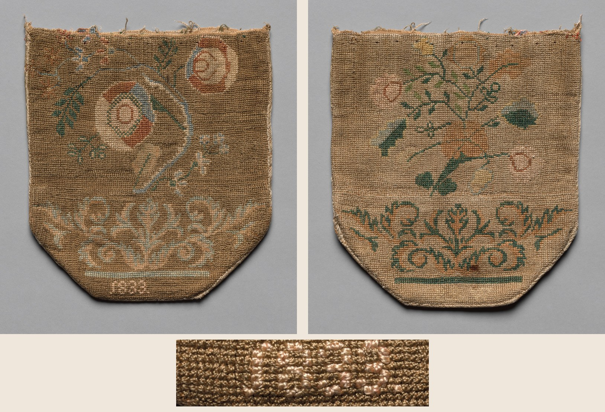
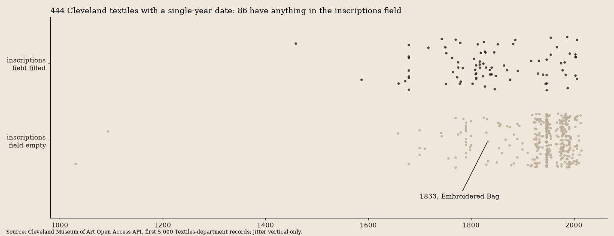

The Date Is in the Thread

"Embroidered Bag," 1833, America, first half 19th century; silk embroidery, 19.1 × 17.2 cm. Cleveland Museum of Art, 1922.47, gift of Mrs. C. H. Koch, CC0. The museum's two open-access images (front and its alternate), and a crop from its print-size file of the stitched numerals. Composite is mine.
I drew it at random and the record is nearly empty. Title, a date, a culture, a technique, measurements, credit line. creators: empty. description: null. provenance: empty. inscriptions: empty.
That last one is the odd one. The date is not empty, and it is exact: 1833, earliest and latest both. Beside it the culture field is loose, "America, first half 19th Century." A date that precise and a place that vague usually means the date came from the object. It did. Stitched at the foot of one face, in cream silk, in numerals: what I read, at web size and in the close crop, as 1833. (The crop is blocky enough that I would not swear to the last digit from the picture alone; the record agrees with my reading, which is not an independent check.) So the object carries an inscription, and the record's inscriptions field says there is none. I then checked the field's practice. Pulling 5,000 records (of the department's 5,272) from Cleveland's Textiles department, 444 have a date that is a single bare year, and 86 of those have something in inscriptions. Stitched and woven dates are recorded there routinely: a sampler whose entry reads 'date "1848" across top'; a coverlet with '"1840 / OHIO" woven in two corners'; a pin-cushion sampler with '"MARY WILLIAMSON 1809."' So it is not a house rule that stitched dates stay out of the field. But it is not applied to everything either: five records typed Sampler, each with a single-year date, have the field empty, and so does this bag. I then looked at their five web-size images. Two plainly carry stitched text that the field leaves out: 1929.572 has a name and an age worked into the bottom border (a name, "Ann Chevell," and "Aged," with a number I can't read at that size), and 1984.1129 has "18" and "70" stitched either side of a name, with "den 1 September" after it. 1923.897 has a stitched name beside a small panel, too small for me to read. 1923.901 and 1988.1068 show no date or name I can pick out at that size; that is not the same as none. So the empty field is not explained by the objects being blank. What I can say is that this bag falls on the unrecorded side of an uneven practice, not on the side of a rule.
The other face has no numerals. Same border pattern, same scroll, same flat bar underneath it, but a lighter ground, different flowers, and the colors swapped: cream and pale blue on one side, green and orange on the other. The record has one title and one set of measurements for both. Whether the faces are two panels sewn into one bag, whether the darker ground was dyed or has aged differently, whether the same hand worked both: the record doesn't say, and I can't tell from a photograph. The cut top edge with loose threads suggests something is missing above, a closure or a frame. That is a guess from the picture.

Every single-year-dated record in the first 5,000 of Cleveland's Textiles department. Each dot is one record; vertical position within a band is random jitter. The bag is the labeled dot. Plot is mine; data is the museum's. Whether a given empty dot carries a stitched date I did not check, except for the five samplers above.
What it does give is a year, and the year is only recoverable because someone looked at the front and wrote 1833 down. Take that one field away and this is a bag from the first half of a century, by nobody, from somewhere in America. Whoever stitched the numerals did what the museum could not later do for them: put a date on the work in the only place a date could not be separated from it. The name they did not stitch.
Not evidence of: that 1833 is the year the bag was finished (a date in thread says when someone chose to date it); that the maker was a girl, a student, or a professional; anything about Mrs. C. H. Koch.
← a7